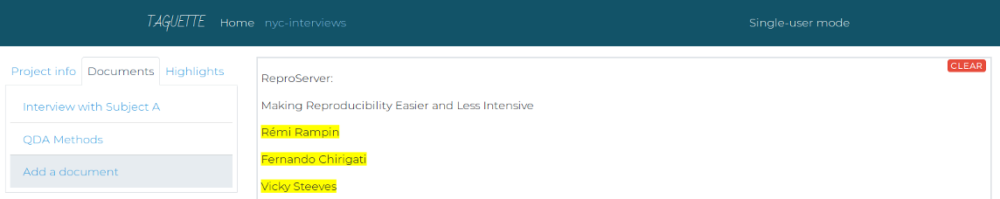
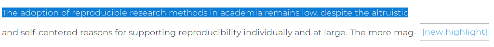
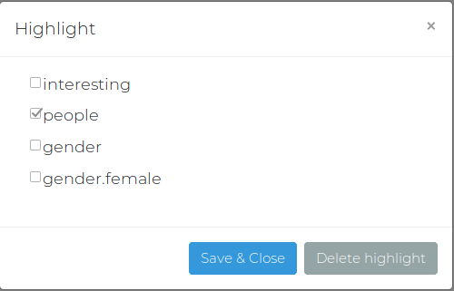
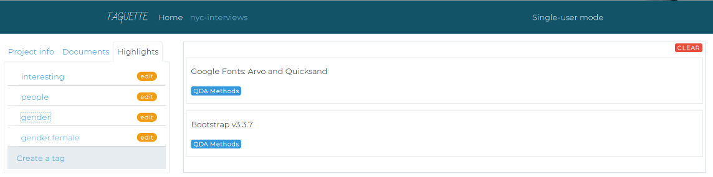

Getting started with TAGUETTE
Start it up!
Right now, to start Taguette on your local computer, you must run taguette in the terminal. You'll see the command line will still be running. This is ok! Don't worry about the terminal but do leave it running. If you exit the terminal, Taguette will stop. In your web browser, navigate to localhost:8000 to begin working on your projects! It should look something like this:
Creating a new project
You will see a page that greets you as the admin and has a button to Create a project. Click that button and you'll be prompted to enter a Title and Description for your new project. This can be changed later on if you want.

Upon clicking Create, you'll be taken the Project View, which has a left and a right pane. The left pane contains the information about your project information ('Project Info'), uploaded materials ('Documents'), and tags ('Highlights') as tabs. You can go between these tabs as you like. The right pane will render documents and will be the area where you'll do the highlighting and tagging.

Upload your materials
To get an idea of how to work in Taguette, let's upload a document and get you tagging! In the left pane, click on the Documents tab. You should see a button that says Add a document. Click that and pick just one document from your computer, either a: .pdf, .docx, .txt, .odt, .md, or .html.
Just one file to be uploaded. You'll be prompted to give the new document a Name (should be something human-readable, required) and Description (like a note about the file, optional). When you have picked a document and at least given it a name, click the Import button.

You should then see that file immediately in the Documents tab. If not, just refresh the page and it should be shown then. If you cannot see your document, you might be uploading a file type that Taguette can not yet handle. Please let us know at hi@taguette.fr.
Tags
Taguette ships with two existing tags (or codes, if you're familiar with qualitative research): interesting and people. These are just there to get you started -- you can add and remove tags as often as you'd like! To view all your existing tags, click the Highlights tab in the leftpane.
You should see a list of existing tags for the project - again, if you haven't added any yet, you will still see interesting and people. To add your own tags to this project, click Create a tag. You will get a popup asking you for the Name and Description of the tag you want to create:
After you give the tag a good name and a bit of description about what the tag means, you should see it added to the end of the list of existing tags.
You can also delete a tag by clicking the edit badge to the right of name of the tag in the list. This will bring you back to the same popup - you can edit the name of the tag, its description, or you can click the grey Delete button next to the blue Save & Close button.
Now that you've created a tag of your own, you can move onto highlighting text!
Highlighting
Once uploaded, you should see the document in the 'Documents' tab. Click on it and you should see the contents of your document in the right pane. Once you see the text in the right pane, we can start highlighting it!
Select some text by left-clicking and dragging it over the text you'd like to highlight. Once you let go of your left-click, a pop-up that says new highlight will appear next to the highlighted text.
Click that pop-up, and you will get a list of existing tags from which to choose. You can select one or more tags to apply to the highlight text.
Once you've checked off which tags you'd like to associate with the highlighted text, click Save & Close, and the text you've just tagged should now be highlighted with the color associated with the tag (e.g. bright yellow).
If you've accidentally tagged a section of text you didn't want to, you can delete it by clicking on the highlighted text. This will give you the same pop-up window that you used to tag it. Next to the save button, there is a grey button called Delete highlight. Click that, and the tags will be removed from the text. It should no longer by highlighted.
View highlighted & tagged text
If you want to see all the highlighted text associated with a given tag, first go to the Highlights tab in the left pane. Click a tag, and in the right pane you will see a list of quotes with a blue link to the document where they originated from:
Export Options
To export the codebook of your project - this is a list of all the tags that you've created alongside their description - use the dropdown menu in the Project tab in the left pane of Taguette, underneath the project description. There is a variety of export options, including CSV (spreadsheet), DOCX (Microsoft Word), and PDF.
To export the current view, either a highlighted document or a list of highlights, use the dropdown menu at the top right. Again, you will have a choice of CSV, DOCX, or PDF.